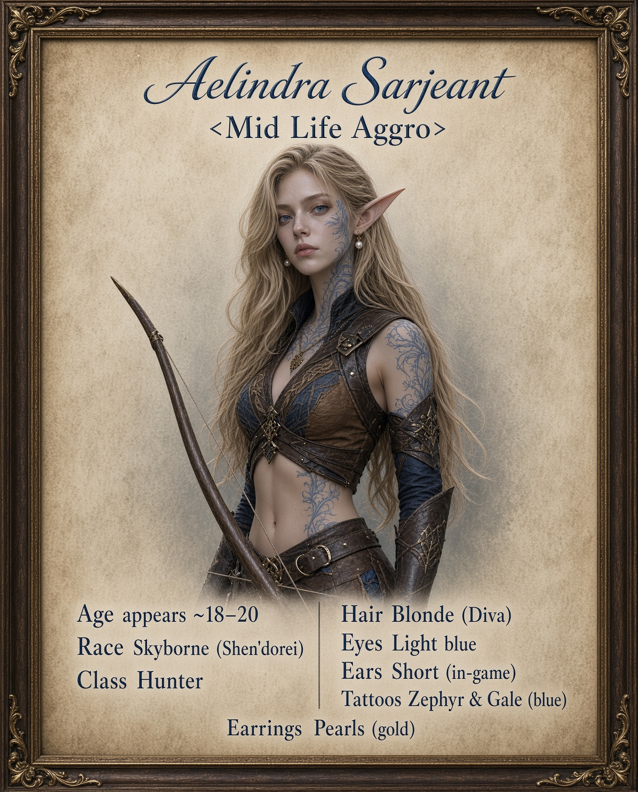

Aelindra Ser'jaen'thal left Zephras Isle with a High Order group. A human hunting trainer could not pronounce her true surname and called her Sarjeant. She kept the useful name.

Aelindra Ser'jaen'thal was born on Zephras Isle during the long years when the wind spirits that had once lifted and protected the floating refuge began to thin and then vanish. Her family belonged to the High Order—the branch of the Shen’dorei that traced its lineage most carefully back to the Highborne scholars of Eldre'Thalas and that argued, with increasing urgency, that dependence on elemental patrons had left their people vulnerable. While the Windshapers still sought to restore the old pacts, the High Order prepared for the day the sky itself would no longer hold.
She has known nothing but the island. Her entire short life has been lived in the sky. She grew up among the wind-carved terraces and the failing pylons. As a child she spent more time on the open edges of the isle than in the study halls. She learned the names of the currents the way other children learned their letters. Her parents, both High Order scholars of modest standing, encouraged the observation but hoped she would eventually turn it toward arcane theory. She never did. Theory bored her. Patterns in motion did not.
By the time she was old enough to hold a bow, the damage to Zephras was no longer theoretical. Sections of the outer terraces had already sheared away. Elementals that had once been allies had become unpredictable or simply absent. Aelindra took the hunter’s training available on the isle—tracking, the bow, the controlled use of Walk on Air to move between heights without wasting energy on pure flight. Elemental Insight came easily to her. Her instructors noted that she was not the most gifted arcanist among the High Order youth, but she was the one who returned with the most useful reports. She is still young. The bow is no longer taller than she is.
When a small High Order delegation prepared to leave Zephras and make contact with the wider Alliance, Aelindra asked to go. She was still young by elven measures, and her family did not forbid it. The island was no longer the certain future it had once been. She packed lightly: a good bow, field notes on the failing currents, the blue Zephyr and Gale tattoos she had taken as marks of the wind she was born under, and a few pieces of gold jewelry with pearl earrings that had belonged to her mother. The jewelry was not practical, but she wore it anyway.
The journey off the isle was the first time she spent more than a day on solid ground that did not move with the wind. The weight of ordinary earth felt strange under her feet. She kept the habit of checking the sky first, then the ground, and she still does. Solid ground is new to her. She has lived her whole life in the sky.
In the Eastern Kingdoms the High Order group made cautious contact with Alliance forces. Aelindra, more interested in practical skill than diplomacy, sought out a human hunting trainer who worked the edges of the settled lands. The man was experienced, plain-spoken, and not especially patient with long elven names. On their first meeting he asked her name. She gave it fully: Aelindra Ser'jaen'thal. He tried it once, stumbled on the apostrophes and the final syllables, and tried again. The second attempt came out closer to “Sarjeant.” He shrugged, called her that, and moved on to showing her how humans read sign on the ground.
She could have corrected him. She did not. The shortened name was easier to call across a range when a shot needed correcting or a track needed confirming. It carried none of the weight of a failing island or a lineage that still expected her to return to the study halls. Over weeks of training the name settled. Other humans and dwarves she met used it without hesitation. Among the elves who had traveled with her she remained Aelindra, or simply Ser'jaen'thal when formality was required. Everywhere else she became Sarjeant.
The trainer never mastered her true surname. He also never pretended the human methods were superior in every way. He taught her what worked on solid ground and left her the sky. She taught him, in return, how to read the first signs of an elemental surge before it broke the surface. The exchange was practical. Neither of them required the other to become something they were not.
Aelindra still answers more readily to Sarjeant than to her full name. She keeps the blue Zephyr and Gale tattoos visible; they are not hidden under armor or makeup. The gold and pearl jewelry stays as well—small, worn close, never so elaborate that it catches on gear. Her blonde hair is kept in the precise Diva style she favors, short ears unmarked by additional adornment beyond the feathers she sometimes tucks into her hair or gear when the wind is favorable.
She is still learning, and she is still young. The human way of tracking is slower and closer to the dirt than anything she was taught on Zephras. She does not claim to have mastered it. She takes the next useful lesson, the next cleaner shot, the next better path through unfamiliar ground. Progress over perfection is not a slogan she repeats; it is simply how she works. She will glide from a height when it serves the hunt, read the elemental traces when they appear, and walk the ground when the sky will not give her the answer. The name Sarjeant fits that life well enough. The longer one remains for the elves who still remember the isle as it was. Solid ground is still new. The sky is home.
Skyborne portrait
| Name | Aelindra Sarjeant |
|---|---|
| True Name | Aelindra Ser'jaen'thal |
| Race / Faction | Skyborne (Shen’dorei) • High Order • Alliance |
| Class | Hunter |
| Age | Still young by elven reckoning. Appears roughly 18–20 to human eyes. Born and raised entirely on Zephras Isle. |
| Height | Tall |
| Build | Slender |
| Origin | Zephras Isle • High Order family • Life lived in the sky |
| Personality | Observant, practical, quietly wry for her age. Prefers clear next steps over long theory. Accepts imperfect tools and imperfect names if they work. Still adjusting to solid ground. |
| Focus | Tracking (sky and ground), scouting from height, elemental prey, ranged combat. Actively refining human methods of reading sign. |
| Feature | Selection |
|---|---|
| Skin Color | 7 White |
| Face | 3 |
| Hair Style | Diva 15 |
| Hair Color | Blonde 3 |
| Eye Color | 7 Light Blue |
| Eyebrow Style | 3 Feathered |
| Ears | 3 Short |
| Eyesight | 1 Both |
| Body Tattoo | 2 Zephyr • Color: 2 Blue |
| Face Tattoo | 2 Gale • Color: 2 Blue |
| Feathers | 2 Feather |
| Earrings | 5 Pearls |
| Jewelry Color | 1 Gold |
Currently: Traveling through Azeroth, learning to read unfamiliar ground beneath a familiar sky. Practicing the tracking methods taught by a human instructor and tending her island companions, Sylthara the Prideclaw cat and Thalorien the Ursera bear. Sylthara is her regular companion for hunts and dungeons; young Thalorien generally rests safely and joins her for peaceful gatherings.
Description: A tall, slender young Skyborne with pale skin, short ears, and light blue eyes. Her blonde hair is arranged in the precise Diva style she favors, with blue Gale markings visible on her face and Zephyr tattoos where her clothing leaves them uncovered. Gold jewelry sits close to her body; pearl earrings and tucked feathers lend elegance to otherwise practical hunting gear. Her gaze often travels upward before returning to the path. When examining a track, she takes her time rather than pretending the answer is obvious.
Glance 1 — Zephyr and Gale: Blue markings cross her face, with matching wind-patterned tattoos visible wherever her gear leaves skin uncovered.
Glance 2 — Gold and pearls: Small gold pieces sit close against her clothing. Pearl earrings catch the light when she turns her head.
Glance 3 — Feathers in the breeze: Feathers tucked into her hair or equipment stir as she turns toward a change in the wind.
Glance 4 — Sky first, ground second: She checks the open air, then crouches to inspect disturbed soil or a bent stem. Sometimes she looks twice before choosing a direction.
Glance 5 — Room for a companion: She leaves space beside her for an animal to pass and watches its posture before giving a quiet cue. If no companion is present, omit this glance.
Personality: Observant, practical, and quietly wry. She would rather return with a useful report than win an argument about theory. Her High Order upbringing shows in careful presentation and an expectation that details matter, but she accepts an imperfect name or method when it works. She is young enough to be curious, occasionally impatient, and willing to admit that unfamiliar ground has confused her. She treats her animals as living companions with their own limits.
Motto: “Take the next useful step.”
Voice: Measured, clear Common with elven formality that relaxes in familiar company. She favors concrete observations, honest questions, and occasional dry humor. “I saw where it went. I am still learning what it left behind.”
Notes (private continuity):
Name: Aelindra Sarjeant
True name: Aelindra Ser'jaen'thal
Race: Skyborne (Shen’dorei)
Affiliation: High Order; Alliance
Class: Hunter
Age: Young by elven reckoning; appears roughly 18–20 to human eyes. Exact age unspecified
Origin: Zephras Isle
Height: Tall
Build: Slender
Eyes: Light blue
Hair: Blonde, Diva style
Skin: Pale
Ears: Short
Marks and adornment: Blue Gale facial markings and Zephyr body tattoos, gold jewelry, pearl earrings, and feathers
The sky was home long before the ground became a lesson.
Aelindra is a young hunter of the Skyborne High Order, accustomed to watching currents and distant movement, now learning what a footprint can tell her at arm’s length. She keeps the blue markings of her people visible and wears her gold and pearls even on an ordinary road.
Most people know her as Sarjeant. Those who ask politely may hear the longer name, though she will not insist they pronounce it correctly on the first attempt. A clear lesson, a useful trail, or quiet company earns more of her attention than a grand claim.
Her Prideclaw cat, Sylthara, is her trained companion on hunts and in dungeons. Thalorien, a young Ursera from the same island, is still growing and usually joins her for peaceful gatherings rather than dangerous expeditions. Both receive patient attention suited to their different experience.
OOC field: Alliance Skyborne hunter in the Year 25 / WoW Forever setting. Young by elven standards, appearing approximately 18–20; exact age unspecified. Born on Zephras Isle. True name: Aelindra Ser'jaen'thal. Ground tracking is still being learned. Public glances describe what can be seen; history and private notes are not automatic character knowledge.
Roleplay hooks: Ask about a visible tattoo, the feathers, her bow, or the pronunciation of her name. Offer a lesson in local tracks or ask her to read the air from a vantage point. Share a quiet watch or ask about the companion currently beside her. Let her decide what she discloses about home.
Companion use: Use the profile for the animal currently accompanying her; both need not be present together. Keep animal reactions and other players’ responses open, and ask before approaching, feeding, or touching either companion.
Her Prideclaw cat, Sylthara, is her regular hunting and dungeon companion. Young Thalorien the Ursera bear comes from the same island but chiefly joins peaceful roleplay gatherings while he grows and learns.
Characteristics: Name: Sylthara. Title: Aelindra’s hunting companion. Species: Prideclaw (cat); native to Zephras Isle. Role: seasoned hunting and dungeon companion. Age, sex, coat color, and markings: unspecified; match the actual in-game pet.
Currently: Accompanying Aelindra on hunts, dungeon expeditions, and the trail, or resting nearby when the party stops.
Motto / handler’s phrase: “Easy, Sylthara. Let it pass.”
About / History: Sylthara is Aelindra’s Prideclaw cat companion from Zephras Isle. The name Sylthara is a roleplay name suggesting silver wind; it is not a claimed Shen’dorei translation.
Characteristics: Name: Thalorien (thah-LOR-ee-en). Title: Aelindra’s young companion. Species: Ursera (bear); native to Zephras Isle. Role: peaceful RP companion, not the regular combat pet. Young; sex, coat color, and markings unspecified—match the in-game pet.
Currently: Joining Aelindra at a campfire or peaceful gathering, exploring with a curious nose, or resting safely while Sylthara accompanies her into danger.
Motto / handler’s phrase: “Come along, Thalorien. That is somebody else’s supper.”
About / History: Thalorien is Aelindra’s young Ursera from Zephras Isle. He joins her mainly at peaceful gatherings while Sylthara handles hunts and dungeons. The name suggests one of the high forest or elevated wilds.
This document was developed with research, editorial, and writing assistance from ChatGPT (OpenAI) and Grok (xAI). AI-generated material was reviewed, revised, and incorporated by the author. Historical and lore claims are supported by separately identified sources wherever available.